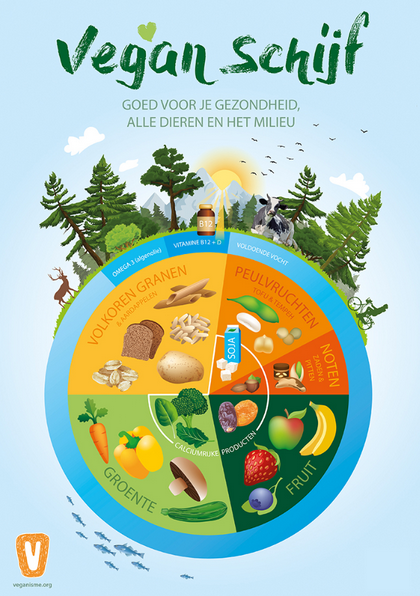

Following is the script of the video with all the references.
How to eat a healthy vegan diet. Is it even possible? And if it is possible, how doable is it really? In the past decade the vegan diet has grown in popularity, even amongst professional athletes!
At the same time, there are many questions and concerns floating around about whether such a diet is truly healthy and how to ensure you get all the nutrients your body needs. That's why in this video, we set out to create a complete and simple overview on how you can eat a healthy plant-based diet. We will provide you with practical information on how to ensure you are getting all the nutrients that your body needs based on the current scientific consensus.
The vegan diet; a diet that excludes all animal products like beef, milk, chicken, eggs, fish and pork. Let's first address the question: is it even possible? Here is the 'Academy of Nutrition and Dietetics'. They represent more than 112,000 credentialed nutrition and dietetics practitioners. They are the world's largest organization of food and nutrition professionals. And they say appropriately planned vegan diets are healthful and nutritionally adequate for all stages of the life cycle. And in this, they also include athletes.
Sources that claim a healthy vegan diet is possible:
- National Library of Medicine "appropriately planned vegetarian, including vegan, diets are healthful, nutritionally adequate, and may provide health benefits for the prevention and treatment of certain diseases."
- Voedingscentrum Translated from Dutch: "How can I eat vegan healthily?" followed by a detailed explanation.
- World Health Organization "healthful and well-planned plant-based meals can provide adequate levels of micronutrients."
- For athletes: "it is the contention of this article that a nutritive vegan diet can be designed to achieve the dietary needs of most athletes satisfactorily" Academy of Nutrition and Dietetics
We've ensured all our claims are either directly based on scientific literature or on generally accepted to be reliable organizations who base their claims on scientific literature. You can find a link to all our references in the description.
Some of the main organizations we have used:
And now... Let's get concrete and simple. And talk about HOW to eat a healthy vegan diet
....

Translated and taken from https://www.nieuwsvoordietisten.nl/nieuw-de-vegan-schijf/
Let me introduce you to the vegan plate. It has 5 slices and a crust. Each of these 6 sections represents one category of foods, like fruits and vegetables. The consensus is that if you eat a certain amount of each of these categories every single day and vary within those categories in general you should get all the nutrients you need.
This vegan plate might remind you of the commonly known wheel of five, or the old food pyramid or food plate. And as you'll see this vegan plate has many similarities to those framworks except that it's completely vegan! The vegan plate was created by a team of dietitians working together with the Dutch Society for Veganism. They have ensured that people following the vegan plate will get you all the nutrients that their body needs.
When explaining the sections filled with a lot of carbohydrates, fats or protein, we won't go much into the details of HOW MUCH you need of those categories. As this depends on multiple factors which can differ a lot per person.
A few examples that show this:
- "To determine your daily protein intake, you can multiply your weight in pounds by 0.36"
- The Dutch national health service on nutrition says 0.83 grams protein per kg of body weight: "Gemiddeld hebben gezonde mensen per kilogram lichaamsgewicht 0,83 gram eiwit per dag nodig."
- "Your recommended calorie intake depends on various factors, like age and activity level."
- Factors that might affect your vitamin D levels: Where you live, Your age, Your skin color, Your weight, Certain health conditions
Let's start with the biggest section: Vegetables. The recommended amount is at least 250 to 300 grams per day.
Then the second biggest section is the whole grains (and potatoes). This section includes brown rice, potatoes, whole grain bread, oats and whole grain pasta. Being a good source for certain nutrients this section is partly how you get your complete protein from plants!
Which brings us to the next sections. Legumes! This includes peas, tofu, tempeh, chickpeas and all beans. Legumes are a great source for many essential nutrients and ontop of that legumes combined with a whole grain can be considered a complete protein.
Meaning that it contains adequate amounts of each of the essential amino acids that we need to make our proteins.
Factcheck me right now!
So examples of a complete protein could be:
And where are those vegetables from earlier? Oh! There they are
This actually look like a vary tasty dinner!
Source: My personal opinion :)
On a plant-based diet, the recommended amount of protein is 1 gram per kg of healthy body weight. So if you have a healthy body weight of 70 kg, then it is recommended to eat 70 grams of protein.
"Research on protein balance suggests that vegans should aim for at least 1.0 g/kg/day" ~ veganhealth.org
(https://veganhealth.org/protein/protein-part-2/)[https://veganhealth.org/protein/protein-part-2/]
If at any point this all seems like a lot to take in. There's no need to worry as in this video we'll gradually build up a complete and simple overview of all the essential practical information that you need to start pursuing a healthy plant-based diet. I would also like to acknowledge that this video is pact with quite a lot of information so if you are serious about adopting a plant-based diet feel free to rewatch this video as many times as you need. You can even read the script with references in the description.
Then our next section is fruit. The recommended amount is to eat at least 300 grams of fruit every day. This is equivalent to a big apple and a manderin. Or sharing a pineapple with someone.
- https://www.schijfforlife.nl/_files/ugd/9b753b_1bbcdd6316ea4e33abf21288a94cd0ff.pdf
- https://www.veganisme.org/informatie/voeding/
- Or alternatively, according to the National Health Service of the UK, when eating a vegan diet the recommended amount combined with is vegetables at least 5 portions (so for example 250 grams of vegetables and 2 pieces of fruit). https://www.nhs.uk/live-well/eat-well/how-to-eat-a-balanced-diet/the-vegan-diet/
Then our next slice is nuts, pips and seeds. Even though peanuts are technically a legume, nutrionally they are also in this section. So peanutbutter, chiaseeds, flaxseeds, walnuts, sesame seeds, tahini. They are all part of this seciton. Recommended is to eat at least 30 grams of unsalted raw nuts, pips or seeds every single day and once a week 30 grams extra.
- Hoe Kan Ik Gezond Veganistisch Eten
- A handful is equivalent to one ounce which is 28.35 grams, rounded to 30.
- https://www.schijfforlife.nl/_files/ugd/9b753b_1bbcdd6316ea4e33abf21288a94cd0ff.pdf => info can be found in Dutch on the page: "Vak5: vetrijke producten"
Before we move to the final section: 'the crust', A few remarks about these 5 slices. Firstly: it is crucial that you vary within each slice! When looking at fruits for example: that you eat a variety of fruits in your diet!
Secondly: calcium. osteoporosis is a health conditions that weakens bones making them fragile and more likely to break. A lack of calcium can be a cause for this condition
They've included an inner section in the vegan plate for calcium rich products. So make sure to also include them in your diet. Calciumrich products include
Dutch Dietitian recommending 150 grams green leafy vegetables every day
Other sources for calcium are
Thirdly: Iodine. For your iodine make sure to either eat bread with iodized salt, seaweed, or iodized table salt. If you're going to eat certain seaweeds, look out that some (like kelp) contain much more than needed. Check out this table:
- https://ods.od.nih.gov/factsheets/Iodine-HealthProfessional/
- https://www.researchgate.net/publication/8140403_Variability_of_Iodine_Content_in_Common_Commercially_Available_Edible_Seaweeds
- https://www.hsph.harvard.edu/nutritionsource/iodine/
- "As diets become increasingly restrictive, assurance of adequate iodine intake increasingly depends on the appropriate use of iodized salt and other dietary supplements."
Finally: Iron. To make sure you get enough iron, it is recommended to pair iron with vitamin C in your meals, as this enhances your body's ability to absorb iron.
Here you can see some examples of foods rich in Iron and foods rich in vitamin C
Foods rich in iron include
For vitamin C fruits and vegetables are the best sources of this nutrient.
- https://scopeblog.stanford.edu/2017/10/06/ways-to-boost-blood-iron-levels-while-eating-a-vegan-or-vegetarian-diet/
- https://www.healthline.com/nutrition/iron-rich-plant-foods#TOC_TITLE_HDR_6
- Vitamin C sources
- "Accumulating evidence strongly suggests that in addition to the known ability of dietary ascorbate to enhance nonheme iron absorption in the gut, ascorbate within mammalian systems can regulate cellular iron uptake and metabolism"
The amount of iron you need is:
8.7mg a day for men over 18
14.8mg a day for women aged 19 to 50
8.7mg a day for women over 50
https://www.nhs.uk/conditions/vitamins-and-minerals/iron/- "People who follow a vegan diet need 1.8 times the RDA, compared with those who eat meat. This is due to the fact that nonheme iron is not as readily available to your body as heme iron" https://www.healthline.com/nutrition/how-much-iron-per-day#influencing-factors
UI
"Tolerable Upper Intake Level (UL) - the highest amount you can safely consume - is 40-45 mg per day for iron, depending on your sex and age" https://www.healthline.com/nutrition/how-much-iron-per-day#influencing-factors
Here is a simple overview of what we've discussed thus far. The 5 slices, that you should vary within each slice and how to get enough iodine, calcium and iron
With all this in mind, let's take a look at the nutrients our sources say you should look out for when you stop eating animal products. It might seem like a lot, but don't get discouraged just yet! Here's the good news: if you follow the guidelines we've covered so far, you'll be getting sufficient amounts of all these nutrients in green.
If you are thinking of an essential nutrient that you think we should have mentioned, please look up what contains that nutrient and see if you can easily get sufficient amounts through following the vegan plate. We're willing to bet you can! In any case please share your findings in the comments!
3 nutrients remain that are not trivially sufficient with what we've discussed so far.
Wait, how can I trust you in that you really get all those nutrients? I'm glad you ask! In our references page we've included a table with all nutrients that you should look out for when having a vegan diet, and how you can get them through the vegan plate with references. Our nutrient table is here. NOTE that this is not yet complete
Plant-based sources of protein.
- Examples of plantbased protein.
- "Vegetarians should obtain protein from a variety of plant sources, including legumes, soy products, grains, nuts and seeds.",
- "Fortunately for vegans and vegetarians, several plant-based foods and combos contain adequate amounts of all nine essential amino acids."
Vitamin D: Fortified foods, mushrooms and sunshine
For these remaining nutrients we go to the crust of the vegan plate which represents what you consume through water. So water and supplements. So the consensus recommends supplementing vitamin D, vitamin b12 and both omega 3 DHA and EPA.
Vitamin D deficiency is very common!
Vitamin D helps regulate the amount of calcium and phosphate in the body, which are needed to keep bones, teeth and muscles healthy. A lack of vitamin D can lead to bone deformities and bone pain. Other symptoms include: Fatigue, Not sleeping well, Depression or feelings of sadness, Hair loss, Muscle weakness, Loss of appetite, Getting sick more easily and Pale skin If you don't want any those symptoms, even when not going vegan it can be recommended to supplement.
The National Health Service of the UK even says "Government advice is that everyone should consider taking a daily vitamin D supplement during the autumn and winter." They are refering to seasons with less sunlight, because when your skin is exposed to sunlight, it manufactures vitamin D
Alternatively to supplementation you can also consume foods fortified with vitamin D and certain mushrooms (CHECK YOURSELF IF IT'S ENOUGH)
How much vitamin D you need depends on multiple factors; including where you live, age, skin color, weight, foods you eat, and certain health conditions.
When combining the sources of Harvard Medical School with Europe PMC, we see a range 25mcg - 100mcg for how high your daily vitamin D dose should be. For most people between 25mcg and 50mcg brings you to optimal levels. If you have less fat, are more light skinned, are young, or are outside often. All these factors will lean you more to the left side of the scale. If you have more fat, or are more dark skinned, or older, or inside a lot. These factors will lean you more to the right side of the scale.
- Says that for half the people a daily dose of 25mcg brings them to optimal levels. The other half need even more
- https://www.health.harvard.edu/staying-healthy/taking-too-much-vitamin-d-can-cloud-its-benefits-and-create-health-risks
- Effect of obesity on vit D intake
- Effect of skin color and body weight on vit D intake
More sources that support the claim that darker skin would require higher doses of vitamin D:
- This study suggests that skin pigmentation negatively influences vitamin D synthesis.
- the positive effect that having a less pigmented skin has on vitamin D production Effect of age on vit D intake
- "aging can decrease by greater than twofold the capacity of the skin to produce previtamin D3"
- Mayoclinic recommends older people supplement more
And beware that it might be added to your fortified foods, so check this!
To improve absorption of vitamin D, it can help to consume them with a meal containing dietary fats. So for example with your nuts, pips and seeds. Or another dietary fat-containing product like olives
This is the same for our next supplementation: omega-3
Among other things Omega-3 fats appear to help the heart beat at a steady clip, lowers blood pressure and heart rate and improves blood vessel function.
Symptoms of Omega-3 deficiency include Skin irritation and dryness, Depression, Dry eyes, Joint pain and stiffness and changes in hair texture, integrity and density https://www.healthline.com/nutrition/omega-3-deficiency#How-to-improve-omega-3-status
If you don't want those symptoms and would like to have a healthy cardiovasular system, stay tuned.
So there are three essential types of Omega 3: ALA, DHA and EPA. If you follow the guidelines that we've covered thus far, you should be getting sufficient ALA
Your body does also convert ALA into DHA and EPA but this conversion isn't very efficient, so on a plant-based diet it is recommended to supplement 250 to 500 mg of combined EPA and DHA every single day.
- https://www.healthline.com/nutrition/how-much-omega-3#general-guidelines
- Omega-3 Fatty Acids NIH
- There is no established Upper Limit (UL) of omega-3 EPA+DHA, but it is recommended not to consume too much. "according to the European Food Safety Authority, long-term consumption of EPA and DHA supplements at combined doses of up to about 5 g/day appears to be safe" and "Similarly, the FDA has concluded that dietary supplements providing no more than 5 g/day EPA and DHA are safe when used as recommended". It's regarded safe and but it's not necessary and there are some reasons for not taking so much: "The IOM did not establish a UL for any omega-3s, although it noted that high doses of DHA and/or EPA (900 mg/day of EPA plus 600 mg/day DHA or more for several weeks) might reduce immune function due to suppression of inflammatory responses". This is why we'll recommend less than 1 gram per day.
And finally, arguably the most important nutrient of this video: vitamin B12
Among other things vitamin B12 keeps the nervous system healthy. Symptoms of a deficiency include: extreme tiredness, a lack of energy, pins and needles, a sore and red tongue, mouth ulcers, muscle weakness, problems with your vision, psychological problems, which can range from mild depression or anxiety to confusion and dementia, and problems with memory, understanding and judgement https://www.nhs.uk/conditions/vitamin-b12-or-folate-deficiency-anaemia/
Again some pretty intense stuff which you van avoid by supplementing!
Instead of supplementing you can also consume foods which are fortified with vitamin B12 (CHECK THIS THOUGH)
A type of B12 is in some natural plantbased products, but this type is not properly absorbed, and so currently the only consensus on a reliable source of vitamin B12 is through either supplementation or fortified products.
If you're doing a daily supplementation take at least 50mcg cyanocobalamine B12 per day and at most 1000 mcg a day. This maximum is so high because B12 is a water-soluble (Unlike D and Omega-3) vitamin which makes high doseges generally considered safe. That being said, most dietitians do recommend a daily supplement dosage which is closer to the 50 mcg per day
Because B12 is water-soluble, you don't need to consume them with food. Although you can take and absorb B12 at any time during the day, mornings are recommended due to their important role in nutrient metabolism and energy production.
- https://www.healthline.com/nutrition/best-time-to-take-vitamins#water-soluble-vitamins
- Dutch Dietitian recommends supplementing 50-100 mcg every day. She also recommends the cyanocobalamine type of B12 as this is the most advantagous
- If you choose to supplement only once a week, the recommended is to supplement at least 2000mcg once a week. I know, daily at least 10mcg, weekly at least 2000mcg? This doesn't add up! This is just how vitamin b12 works and if you want to learn more you can check out our references in the description! You can also choose to supplement 1000mcg twice a week (see Dutch Dietitian reference above).
- https://www.vegansociety.com/resources/nutrition-and-health/nutrients/vitamin-b12/what-every-vegan-should-know-about-vitamin-b12
- https://www.health.harvard.edu/staying-healthy/are-you-getting-enough-b12
- https://www.healthline.com/nutrition/too-much-vitamin-b12#helpful-or-harmful
Dietitians recommending lower than the maximum dosage of b12. The above source for the Dutch dietitian and worldofvegan both recommend at most 100 mcg daily.
This was the vegan plate. And here you can see the complete and simple overview of all the practical essential information that we discussed in this video. If you follow this overview and eat each of these 6 section every single day and vary within the 5 slices the consnsus says you will get all the nutrients you need.
If you are uncertain you can use cronometer, in which you can track all you eat and see if you are getting sufficient amounts of each nutrient.
If you can think of anyone who might benefit from this video, please feel free to share this. Thank you for watching! Goodbye